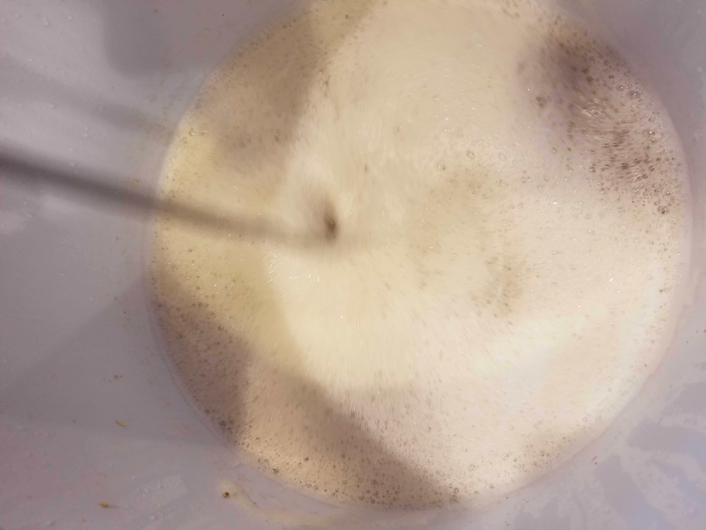
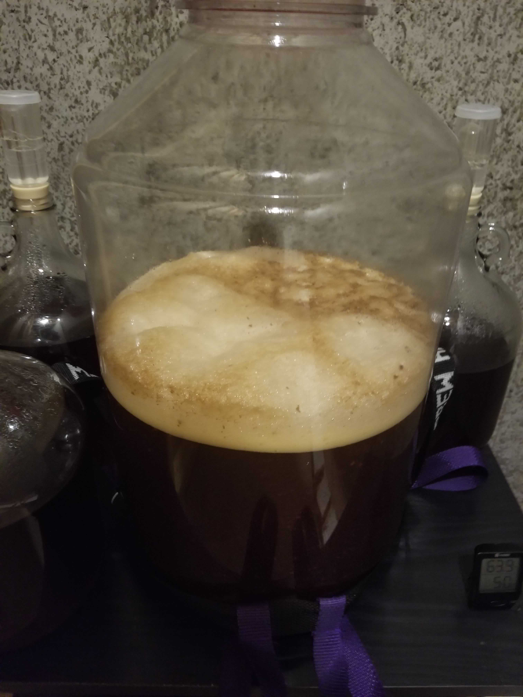

It’s been quite a while since I’ve posted anything, let alone a brew. I probably won’t get back around to posting all my brews, but I have one full of firsts from October / November that I’d like to come back to.
Every year some friends and I get together around Thanksgiving for a few days to catch up. Typically everyone brings something to share - in my case I generally bring a Christmas Ale, typically Breckenridge Brewery’s Christmas Ale in a mini keg. Not necessarily my favorite winter warmer, but one of the first I had so it’s a bit of a tradition.
Winter is the season of my favorite beer - big, malty brews with decent amounts of spice. For this friendsgiving event I really wanted a beer fully from scratch, which is why I built my first mash tun just in time to squeak this winter warmer in.
Without further ado, here’s the 2018 Thanksgiving Winter Warmer.
Recipe: 2018 Thanksgiving Winter Warmer
General Information
| Batch Size | 3 Gal |
| Batch Type | All Grain |
| Batch Number | 1 |
| Expected OG | 94 |
| Actual OG | 92 |
| Expected FG | 25 |
| Actual FG | 22 |
| ABV | 9.32% |
Schedule:
| Segment | Time |
|---|---|
| Mash | 1 Hour |
| Boil | 1 Hour |
Ingredients
Ingredients are per 1 gallon.
| Amount | Ingredient |
|---|---|
| 1.72 lb | Ashburne Mild Malt* |
| 1.72 lb | Pale Ale Malt |
| 0.1 lb | Caramel Malt 80°L |
| 0.1 lb | Briess Extra Special Malt** |
| 0.2912 lb | Molasses |
| 0.2 oz | Challenger 8.0% AA*** |
| 0.4 oz | Kent Goldings 5.0% AA |
| 1 Vial | White Labs WLP 023 Burton Ale Yeast |
| 1.5 packet | Accumash 22 Brewing Salts |
| Steeped After Flame Out: | |
| 1/12 tsp | nutmeg |
| 0.47 oz | dried orange peel |
| 0.7 stick | cinnamon |
| Dry: | |
| 0.7 sticks | cinnamon (sanitized in whiskey) |
* Substituted in Vienna Malt due to availability
** Substituted Special Malt due to availability
*** Substituted Perle due to availability
Hop Schedule
| Boil Time | Amount | Type |
|---|---|---|
| 60 Min | 0.2 oz (All) | Challenger |
| 10 Min | 0.4 oz (All) | Kent Goldings |
Note, total boil time is 60 min.
Mash
This was my first mash at home (and without an instructor), and in general I’d say it went pretty well. We were a bit low on efficiency, but that was expected and planned for. Since I wanted this to be a big beer I threw some Molasses into the mix to a) beef up the ABV b) add some more winter joy 3) have some extra juice to bump up the ABV even more when the efficiency turned out low. With that in mind, I “plannned” on the molasses taking up less than 10% of the total fermentables so we had some wiggle room.
This beer was a single batch infusion with strike water at 162° and a desired mash temperature of 153°. The mash tun was preheated with boiling water, although we did end up needed to add more boiling water to get back up to temp. I’m not sure if this was due to poor preheating or possibly an inaccurate thermometer. For now I plan on resolving this with more preheating.

Boil
After the mash everything went according to plan. 60 minute boil, followed with a steep at knock out. This particular batch was limited to 3 gallons because I’m still using an electric stove top and 6 gallon kettle to boil, which, of course, means it takes quite a while to boil (and I can’t actually boil 6 gallons). Plus, after the boil, it still takes quite a while to cool the beer down to the fermentation temperature using an ice bath and whirl pool. Those last 9 - 11 degrees always seem to take forever. Eventually I’ll invest in a counterflow chiller, propane burner, and larger kettle though.

Fermentation
This was fermented with White Labs’ WLP023 Burton Ale Yeast. This yeast was chosen for it’s attenuation and alcohol tolerance. This was fermented between 72° and 74° for 2 weeks. I don’t yet have a fermentation chamber, so I stick my carboys in the basement. Although the temperature is fairly stable, I did have to move the carboy around a few times to maintain the proper temperature. In other words, not the best temperature control but it did seem to ferment well.
 
One thing that we did change up this time was making a yeast starter. A package of WLP023 should probably be fine for 3 gallons of a typical beer, but we decided to be safe for this high gravity beer.
One last thing - make sure that you use a big sauce pot for your yeast starters. I didn’t consider that this would definitely have a hot break and lost some of that wort, which is why this is so small.
Carbing & Dry Spicing
The last steps that remain were kegging this beer and dry spicing it. This was actually my first kegging experience. Given a little more time I would have keg conditioned with priming sugar or molasses, but, to be safe, I force carbonated this beer. That also took a while since I didn’t end up with enough fridge space to do this quickly, so it was carbed up for about a week (and allowed to carb for 2 before drinking).
The last remaining spices were just cinnamon sticks. These were soaked in whiskey for an hour to sanitize, then dropped in the keg for a few days before drinking.
Result
This beer carries a malty aroma with clear cinnamon and even clearer nutmeg notes. The cinnamon and nutmeg come through on the palate, especially the nutmeg, but the orange peel is very subtle, bordering on non-existent. The molasses plays nicely with the malt, kind of coming across like a molasses cookie. The hops are present but not overpowering or particularly bitter.
One thing I find very interesting with this beer is during the carbing period the nutmeg was completely missing from the taste, up until even the day before the event! Instead it was primarily the cinnamon and molasses. More recently (this week recent) the nutmeg has backed off again.
All in all, this turned out to be a satisfying brew full of firsts. First mash, first keg, I (think) first yeast starter, and a first home brew for a few friends. In the future I would
- Nail down the strike temperature
- Amp up the orange peel
- Remove some of the nutmeg
- Track down the actual ingredients! There were 3 substitutions in this brew.
I fully anticipate I will be brewing a version of this again later this year.